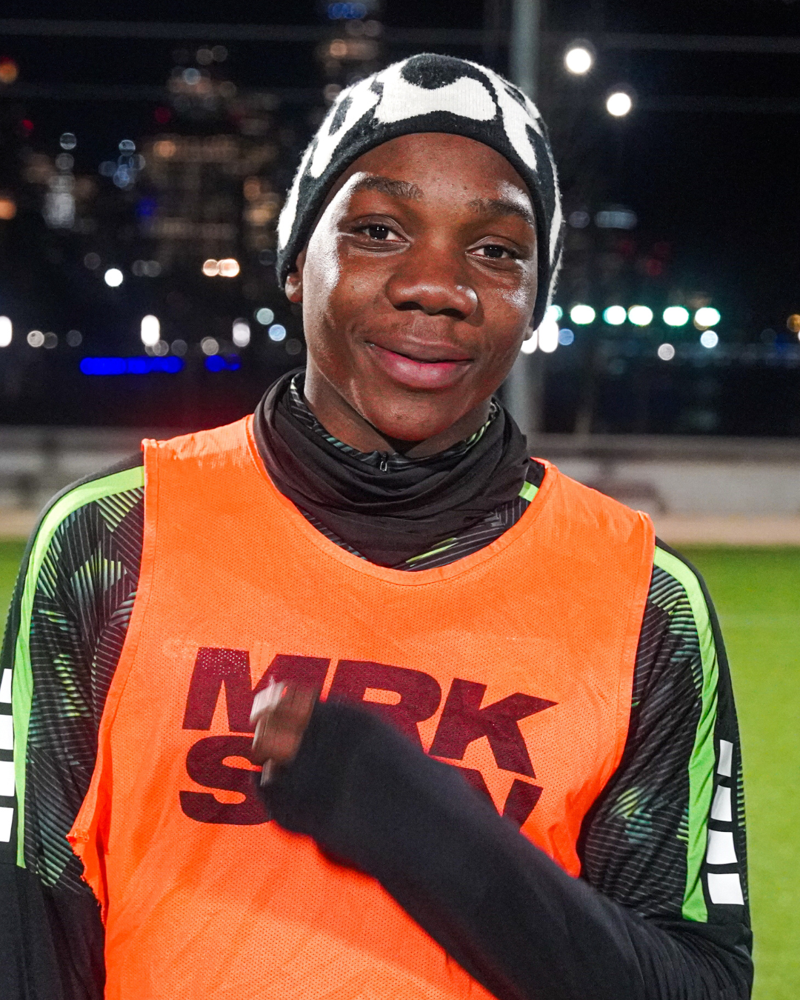

Games
We host regular pickup games across NYC for MLSNext, college, and pro players.

MRKSMN is a platform for players and teams to showcase talent, get discovered, and connect through pickup soccer in NYC.
We host regular pickup games across NYC for MLSNext, college, and pro players.
Our platform helps players get discovered and scouted. You could be next.
We organize invite-only pickup sessions under the lights in NYC’s top fields.

MRKSMN is a NYC-based media platform built to help players gain exposure through footage, game clips, and curated highlight reels.
We work closely with athletes, scouts, and coaches to ensure talent gets noticed.